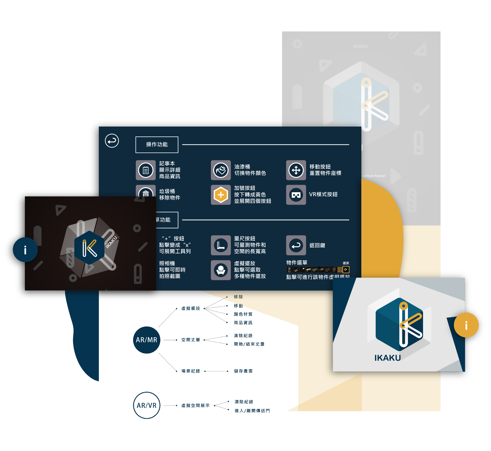
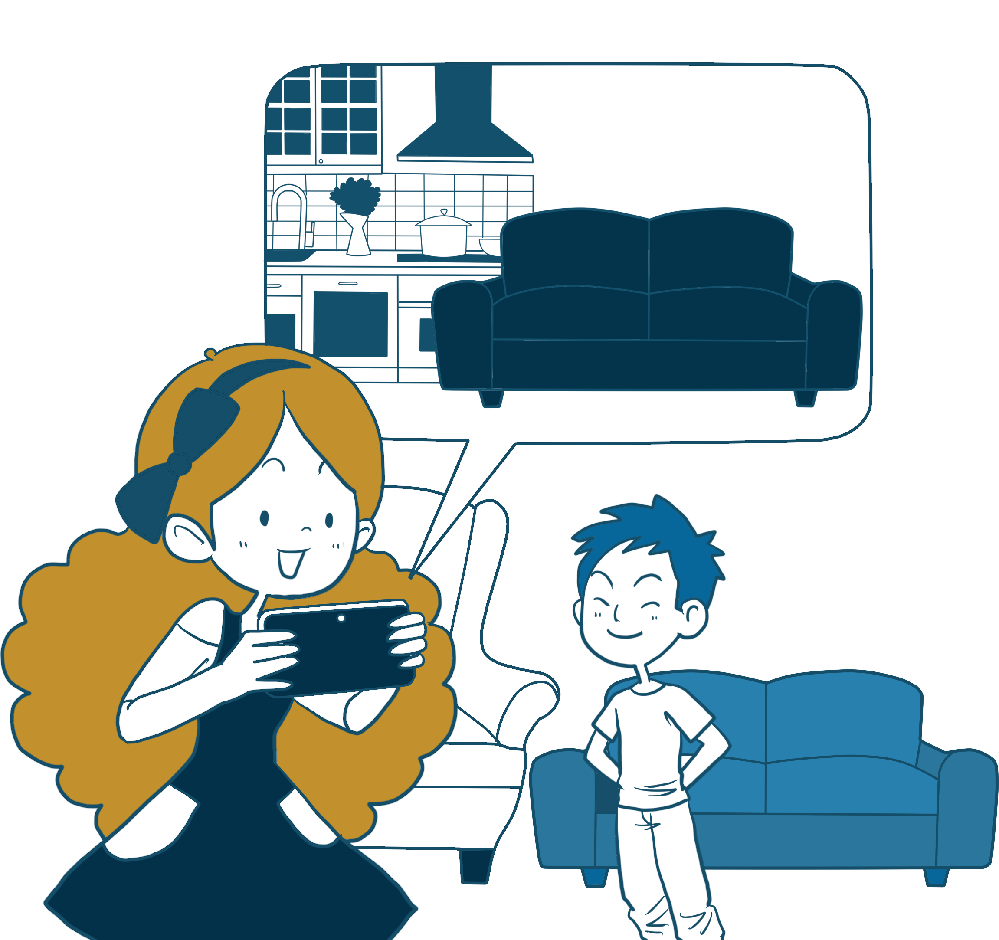
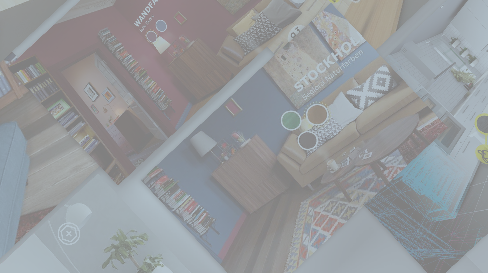
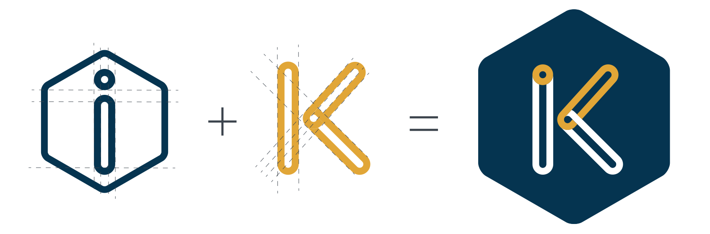
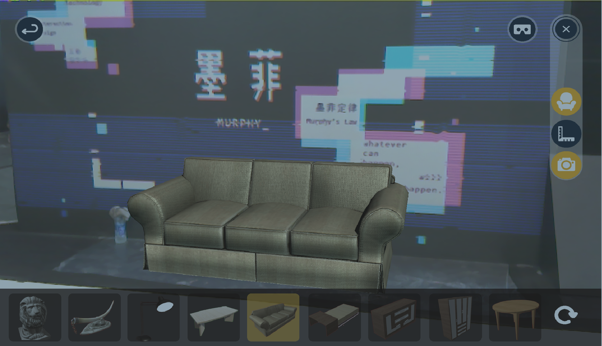
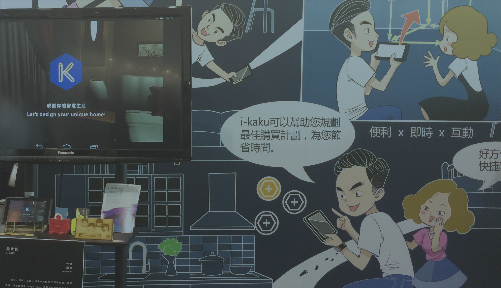
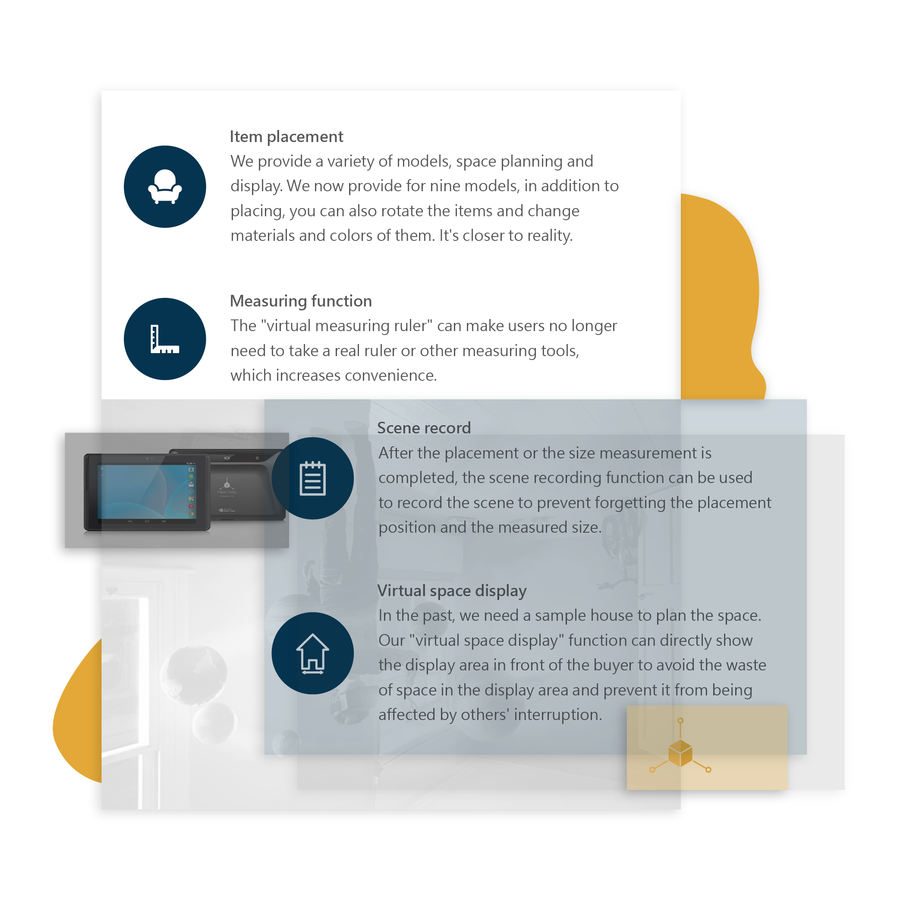
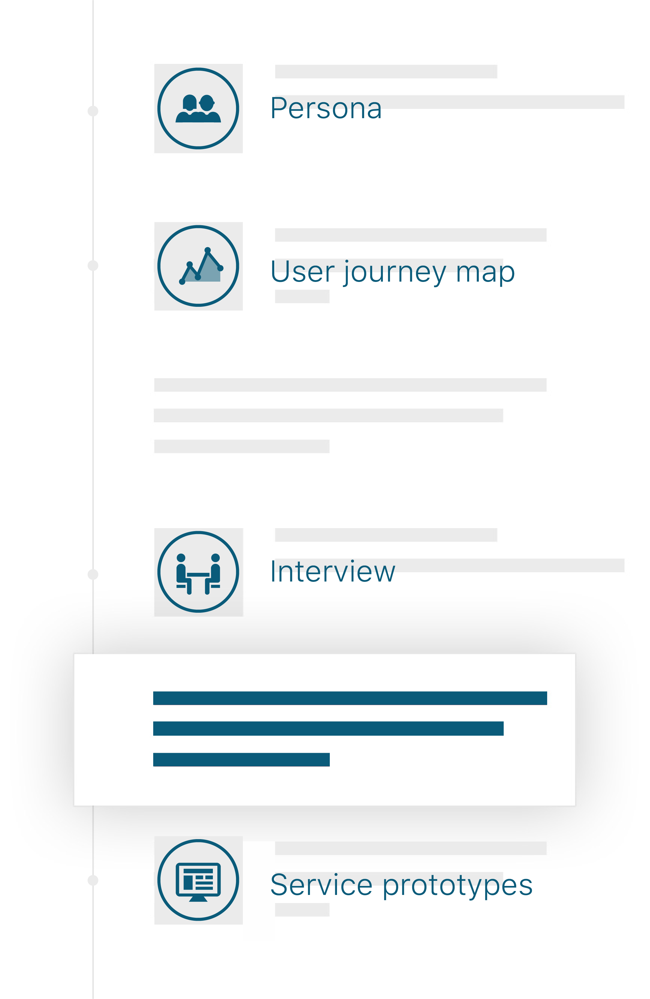

A space planning APP combining AR, VR, MR


You may have problems with measurement
You may have problems with designing furniture layout.

You may want to know the details of furniture colors and materials.
We need a convenient, instant and interactive APP
Traditional methods cannot provide immediate feedback to the planned visual space.
In traditional space planning, users cannot place the furniture directly at home, so after purchase, when the furniture is placed, the size, material and color of the furniture often do not meet expectations.
The name of the APP is called “IKAKU”. This name is pronounced much like “love furniture” in Taiwanese. We hope that everyone can discover the fun of setting up furniture and create a comfortable space.
This space planning app is mainly presented with Tango technology and augmented reality technology (AR). Users can use this software to choose the color, material and size of items in real time. In addition, it can also be presented through virtual reality (VR) or mixed reality (MR). The display area of the virtual space can be directly moved in front of the user to increase the user's immersion.


The logo is a combination of the rhyme of the app's name.
Hexagon-based cubes symbolize space. The hollow lowercase "i" and uppercase "K" are merged into "K" and simplify the display of interlocking spatial layers in lines.



Item placement
Measuring function
Scene record
Virtual space display
First of all, understand user needs and processes through Persona and User journey map,
clarify problem points and design suggestions through expert interviews, and finally produce prototype designs.

next project